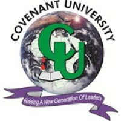

I am a versatile enthusiast possessing adept technical skills as both a physicist and a software programmer.
Additionally, I have critical thinking and problem-solving abilities that allow me to apply these skills effectively.
I was born in Lagos, Nigeria, and attended Nazareth Primary School.
From a young age, I demonstrated exceptional skills in mathematics and science subjects.
In 2012, I enrolled at Kings College Lagos, where I discovered my true passion for physics.
Subsequently, I pursued a degree in Industrial Physics at Covenant University in 2016. This program provided me with a solid foundation in theoretical and applied physics.
My knowledge extends to classical and quantum mechanics, electronics, condensed matter physics, and their practical applications in everyday life.
Despite my physics background, I also developed a keen interest in software development.
Through dedicated learning and practical experience, I acquired the necessary technical skills to become a valuable asset as a full-stack developer and data scientist.
My proficiency encompasses programming languages such as Python, Java, JavaScript, HTML, and CSS.
Moreover, I am well-versed in frameworks like Spring Boot, Django, and Node.js for backend development, as well as React for frontend, enabling me to create efficient and scalable web applications.
Additionally, I have experience with Relational Database Management Systems like MySQL and PostgreSQL, and proficiency in tools such as Linux, Git, Docker, Kubernetes, and Jenkins for deployment and DevOps, making me a well-rounded developer.
Furthermore, I possess expertise in data science and analysis, utilizing Python libraries such as Pandas, NumPy, Matplotlib, and Beautiful Soup for web scraping and data extraction.
I also employ Tkinter for GUI presentation when building insightful models.
During my free time, I enjoy playing football with my friends or indulging in solitary activities such as listening to music or watching movies.
Furthermore, I am passionate about language acquisition and, in addition to English and my native language Igbo, I have also acquired proficiency in Spanish and French through online resources.
Personal Details
Full Name: Ochie Samuel Chidera
Date of Birth: 14-10-1998
Nationality: Nigerian
Gender: Male
Education
-

Covenant University
B.Sc Industrial Physics Electronics and IT Applications
(2016-2020)Grade: 4.47/5.0
Coursework in Classsical Mechanics, Quantum Physics, Statistical and Thermal Physics, Condensed Matter Physics, Advanced Calculus, Mathematical Models, Digital and Analog Electronics, Control Systems and Telecommunications, Semiconductor Technology, Instrumentation and Measurement Techniques, Electric Circuit Theory, Computer Networking, and Software Programming.
-
Kings College Lagos
Senior School Leaving Certificate
(2012-2015)Clubs and Activities: Football Team, Cadet Club, Drama Club, Chess club, Jet club
Internships
-
Total Energies
Information Technology/Facilities Management Intern
(March 2019 - August 2019)As an IT intern with additional responsibilities in Facilities Management, my role was multifaceted and offered a diverse learning experience. In the IT aspect, I provided technical support, troubleshooting computer issues, and assisting with software installations. Concurrently, I contributed to Facilities Management by coordinating office moves, managing inventory, and ensuring compliance with safety protocols. Collaborating with both IT and facilities teams, I gained valuable insights into the intersection of technology and physical workplace management. This combined role enhanced my problem-solving skills, organizational abilities, and teamwork capabilities. It was an enriching opportunity to apply my IT knowledge in a practical setting while gaining valuable insights into facility operations.
-
Addax Exploration and Production
Supply Chain Management Intern
(January 2019 - March 2019)As a Supply Chain Management Intern, I optimized inventory, assisted in procurement, coordinated logistics, and performed data analysis. Contributed to cost-efficiency, vendor selection, timely delivery, and strategic decision-making. Enhanced overall supply chain operations.
Professional Experience
-
Microsystems Investment & Development Limited
Web Developer/IT Support
(November 2022 till date)As the main developer and IT support, my roles are Managing the Main web application and other services like the cashout service and Transfer service which are built with Java Spring Boot and Hibernate framework and MySQL RDBMS deployed in docker containers on Digital Ocean cloud servers for the FINTECH. Data Extraction, Cleaning and Anlysis using Python libraries like Pandas, Numpy, Tkinter and Beautiful Soup as well as other tools like Excel and Cognos. Offered general IT support like providing technical assistance and support to users experiencing issues with hardware, software and other IT-related problems.
Skills: Full-Stack Development · Data Analysis · Spring Boot · Information Technology · Cloud Computing · Financial Analysis
-
St Paul’s Primary School Ayama Ijaw (NYSC)
Class Teacher
(November 2021 - November 2022)During my time as a primary school teacher serving in Bayelsa State, I had the opportunity to educate and empower students through engaging lessons, creating a positive and inclusive environment, and organizing enriching extracurricular activities. My goal was to contribute to their holistic development and leave a lasting impact during my service and from the changes I saw when I left, I can say that I acomplished this goal.
Skills: Physics · Leadership · Public Speaking · Microsoft Word · Research · Teamwork · Communication · Teaching
Volunteering
-
The Ije Awele Foundation
Director of Operations
(June 2017 till date)AAs the Director of Operations for a cancer awareness volunteer organization, I oversee activities, manage volunteers, and develop impactful programs. I am dedicated to driving our mission, engaging stakeholders, and ensuring efficient operations. From managing budgets to evaluating impact, I strive for maximum effectiveness in raising awareness and supporting those affected by cancer.
-

Society of Petroleum Engineers (SPE) Nigeria Council
Venue Hospitality and Facilities Team Lead
(September 2020 till date)Team member of the Venue Hospitality and Facility Team (VHF) for the NAICE 2021. Team Lead of the Venue Hospitality and Facility Team (VHF) for the NAICE 2022 where I monitored and coordinated the organization of the venue as well as the schedules for the programmes that took place at the confrence. Assisted and participated in various SPE council training and events as a member.
-
Mathematics for Life Foundation
Technical Team Member
(June 2021 till date)I was part of the Technical team and participated in setting and vetting questions used in the competiions. I am also currently part of a team that is planning a mathematics and education based reality TV show for secondary school students.
Interests and Hobbies
- Solving Puzzles
- Football
- Reading
- Watching Movies
- Listening to Music
Languages
- English (Native)
- Igbo (Fluent)
- Spanish (Good)
- French (Basic)